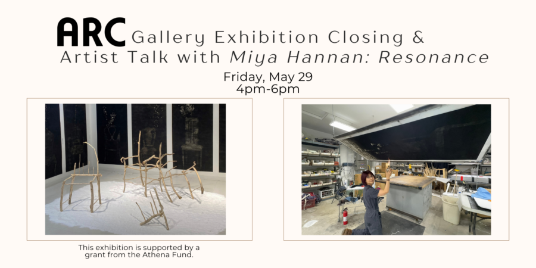

Exhibition Closing & Artist Talk with Miya Hannan at ARC Gallery
Join Athena Fund-awarded artist Miya Hannan for an artist talk at the closing of her exhibition, Resonance, which presents a series of soot drawings and sculptures that explore the presence of human life embedded within the landscape. Using soot—a fluid, fragile residue of combustion—Hannan’s work evokes traces of bodies and histories that have disappeared yet continue to linger. Sanded chairs, with portions of their structure removed and reduced to skeletal forms, represent the erosion and absence of physical presence. The instability of these materials reflects the transformation of human existence, as physical forms shift into memories and stories carried by others. Together, the works create an environment that invites slow looking and quiet reflection.
Resonance is one of three solo shows included in May’s Reflections on Perceptions program, which is supported by a grant from the Athena Fund.